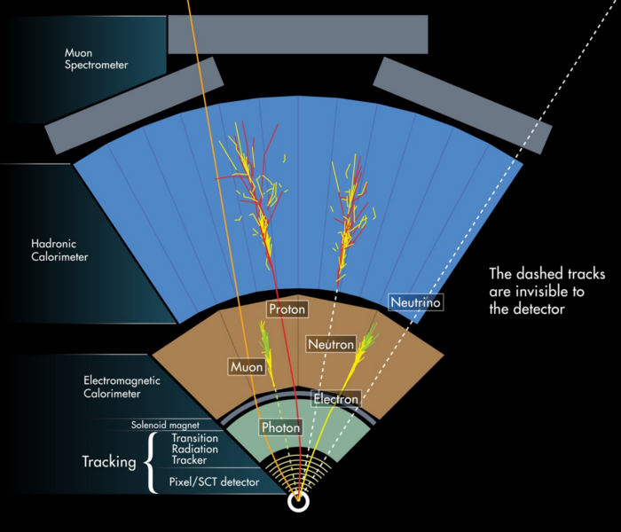
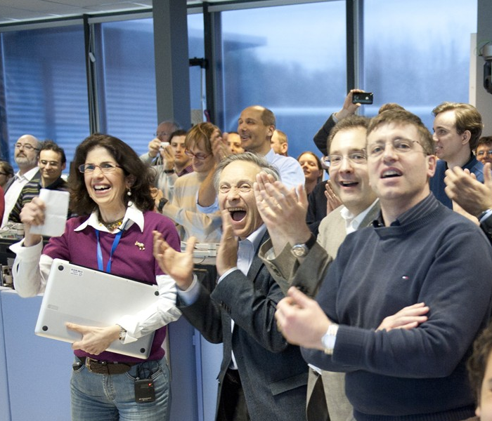

A giant detector at the Large Hadron Collider.
ATLAS consists of several different layers, each sensitive to different types of particles. Together the different layers allow us to detect and identify the different particles produced in collisions at the LHC.

There are several informative videos on the ATLAS experiment and the physics studied at CERN on YouTube.
ATLAS is a multi-purpose experimental facility. It was designed to find Higgs bosons, look for extra dimensions of space, and even help discover invisible dark matter. The ATLAS and CMS experiments announced the discovery of a Higgs boson on 4 July 2012.

The ATLAS Experiment is operated and managed by an international Collaboration, involving more than 3000 scientists and engineers from 38 countries.
Every second, around 1 billion collisions occur in the centre of the detector.
Each year, ATLAS records around 3,200 TeraBytes of data. This is equivalent to around 600 years of music.
ATLAS weighs almost as much as the Eiffel Tower, and is around half the size of Notre Dame.